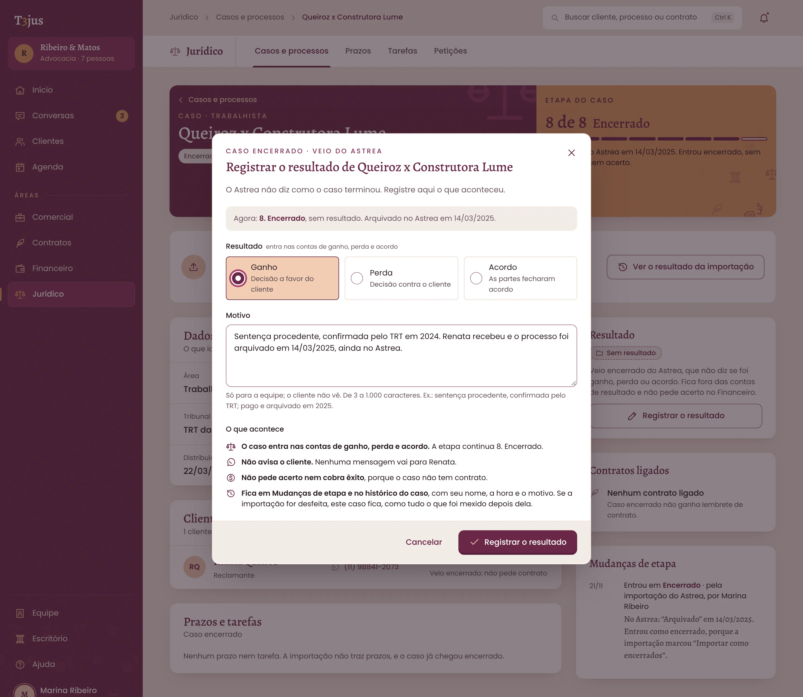

A janela “Registrar o resultado”
Resultado (ganho, perda ou acordo), Motivo obrigatório (3 a 1.000 caracteres) e o que acontece: entra nas contas, não avisa o cliente, não pede acerto, fica no histórico.
Abrir: juridico.html?estado=resultado (estreite a janela para ver o celular)